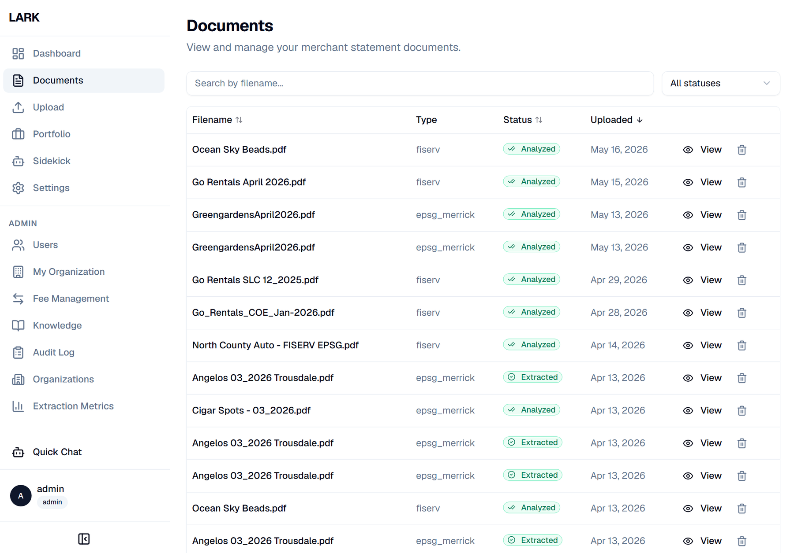
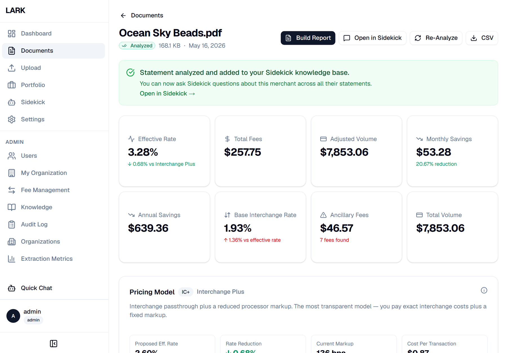
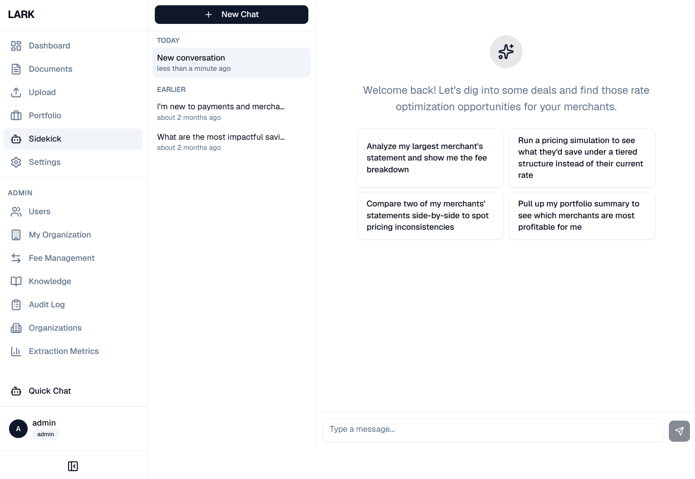
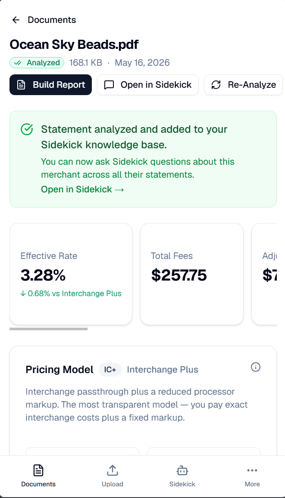
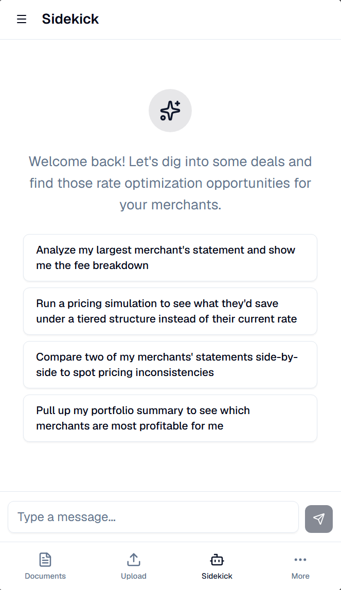

LARK Business Services
An AI-native platform for merchant card processing professionals.

The problem
Merchant card processing statements arrive in dozens of incompatible formats, one per processor. Sales professionals reconcile them by hand to find interchange optimizations, downgrades, and the true effective rate a merchant pays. It is slow, error-prone work that does not scale.
What I built
As co-founder and lead AI engineer I architected and built all of LARK's AI/ML systems and core backend. The platform normalizes statements from disparate processors into a single schema, then runs downstream analysis for interchange optimization, downgrade detection, and effective-rate calculation.
On top of that foundation I built "Sidekick" — an AI agent for sales professionals that handles proposal preparation, portfolio analytics, and statement Q&A — along with branded sales-proposal PDF generation, a portfolio analytics module, and a full suite of multi-tenant administrative features (ISO/agent management, role-based access control, and user provisioning). I am currently leading the integration with Echelon Payments.
Architecture
(any processor) → Multi-agent
extraction → RAG grounding
(interchange rules) → Normalized
analysis
A multi-agent extraction pipeline parses each statement; a retrieval-augmented layer grounds agent reasoning in authoritative interchange rules and processor knowledge, so analysis cites real sources rather than hallucinating.

Highlights
- Multi-agent pipeline normalizes statements across all major processors into one schema.
- RAG over interchange rules grounds agent reasoning in authoritative sources.
- Sidekick agent ships proposal prep, portfolio analytics, and document Q&A.
- Multi-tenant admin with role-based access control and user provisioning.
Tech stack
Python · multi-agent LLM orchestration · retrieval-augmented generation · REST APIs · multi-tenant SaaS architecture · branded PDF generation.
Gallery
LARK is fully responsive — the same workflows on desktop and mobile.



